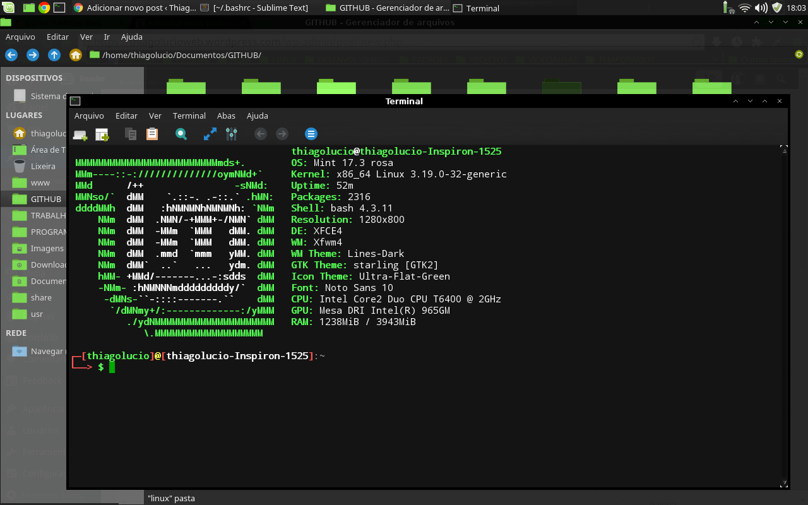

Historico
Linux é um termo popularmente empregado para se referir a sistemas operativos ou sistemas operacionais que utilizam o Kernel Linux. O núcleo foi desenvolvido pelo programador finlandês Linus Torvalds, inspirado no sistema Minix. O seu código fonte está disponível sob a licença GPL (versão 2) para que qualquer pessoa o possa utilizar, estudar, modificar e distribuir livremente de acordo com os termos da licença. A Free Software Foundation e seus colaboradores recomenda o nome GNU/Linux para descrever o sistema operacional, como resultado de uma disputa controversa entre membros da comunidade de software livre e código aberto.
Inicialmente desenvolvido e utilizado por grupos de entusiastas em computadores pessoais, os sistemas operativos ou sistemas operacionais com núcleo Linux passaram a ter a colaboração de grandes empresas como IBM, Sun Microsystems, Hewlett-Packard (HP), Red Hat, Novell, Oracle, Google, Mandriva, Microsoft e Canonical.
O desenvolvimento do Linux é um dos exemplos mais proeminentes de colaboração de software livre e de código aberto. O código fonte pode ser usado, modificado e distribuído - com fins comerciais ou não - por qualquer um, respeitando as licenças, como a GNU General Public License versão 2, devolvendo o código desenvolvido de volta para o desenvolvimento do núcleo.
Normalmente, o Linux é encontrado em uma distribuição Linux, seja para um computador ou para um servidor. Algumas distribuições Linux populares incluem Arch Linux, CentOS, Debian, Fedora Linux, Linux Mint, openSUSE, Ubuntu, além de distribuições focadas para usuários corporativos, como o Red Hat Enterprise Linux ou o SUSE Linux Enterprise Server. Uma distribuição Linux inclui o núcleo Linux, bibliotecas e utilidades, além de aplicações, como a suíte de escritório LibreOffice, um navegador de internet (normalmente Mozilla Firefox), entre outras aplicações.

Principais caracteristica
- É um Software Livre (Open Source). O Windows é considerado um software proprietário;
- É um sistema operativo Multitarefa, assim como o Windows. Multitarefa significa que o sistema pode executar mais de uma aplicação ao mesmo tempo;
- É um sistema operativo Multiutilizador, assim como o Windows. Multiutilizador significa que o computador pode ter várias contas de utilizadores no mesmo computador;
- É Preemptivo – permite a interrupção de processos;
- Sistema Monolítico (também característica do Windows), significa que tem todos processos num só núcleo;
- Superutilizador (também presente no Windows, mas com o nome de Administrador) é o utilizador com controlo total do computador;
- Utilizador comum é o utilizador que não tem poder para manipular todos os recursos existentes no computador;
- Interface gráfica e Prompt de comando significa que é possível interagir com o Linux de duas maneiras: Pela Interface Gráfica ou Prompt de Comando (Shell, bash sh, etc).
Requisistos Minimos para instalação
Processador Pentium IV, 1gb de memoria ram,3gb de disco rigido.
 Página inicial
Página inicial